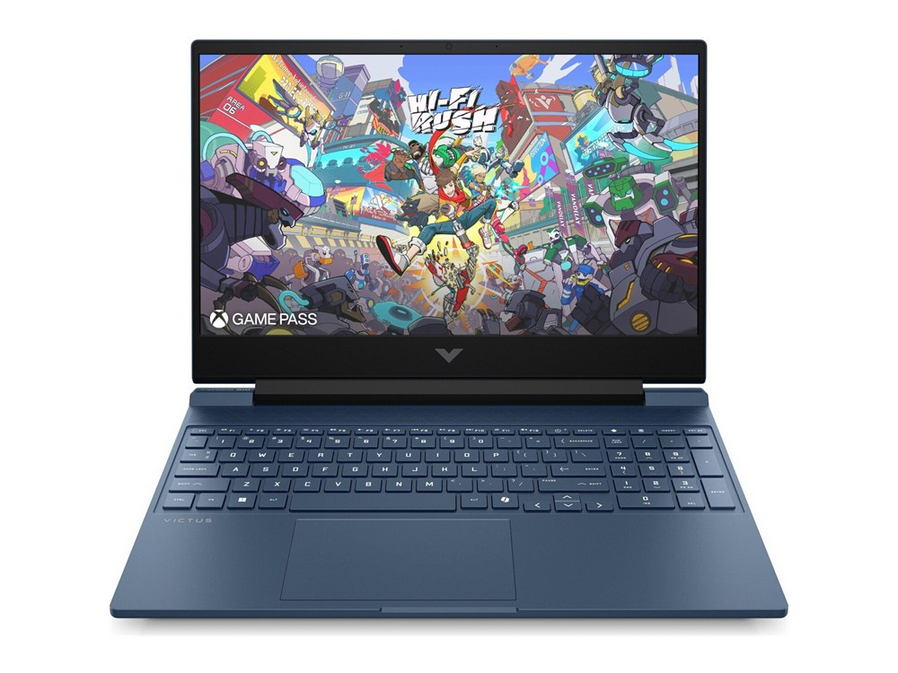
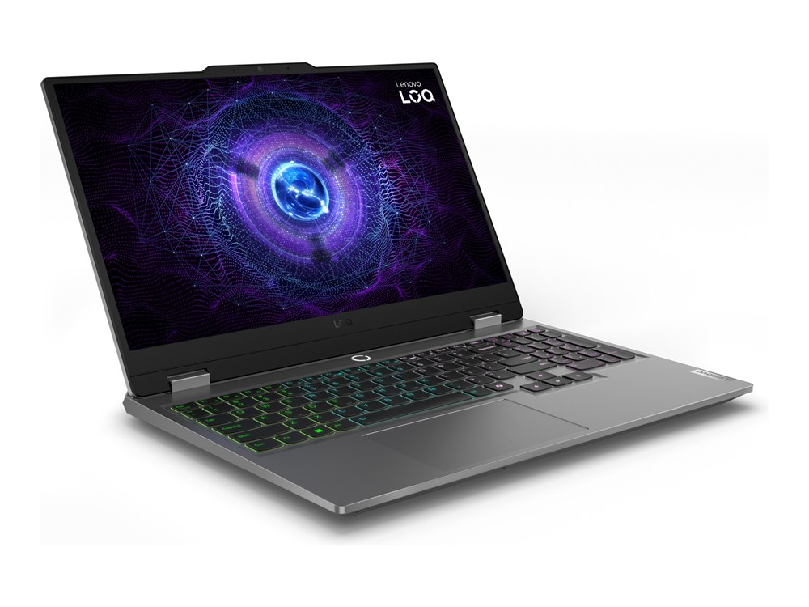
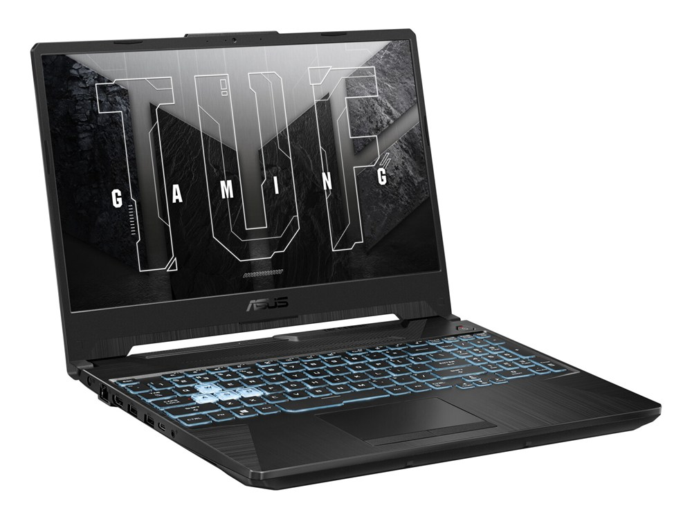

Un portátil gaming barato suele fallar por el mismo sitio: se calienta y baja el rendimiento a los veinte minutos. Por eso no basta con leer "RTX 4060" en la caja; hay que mirar cuánta potencia puede mantener esa gráfica y si el sistema de refrigeración está a la altura.
Las cuatro cosas que importan
- La GPU y su potencia (TGP). Dos portátiles con la misma RTX 4060 pueden rendir muy distinto según los vatios que tenga asignados. Si la ficha no lo indica, busca análisis del modelo concreto.
- Refrigeración. Más grosor y más salidas de aire suelen significar mejor rendimiento sostenido. Los equipos muy finos priorizan diseño, no temperaturas.
- Pantalla. 144 Hz es el mínimo razonable hoy, pero también importa el brillo y la cobertura de color. Un panel mediocre arruina la experiencia.
- RAM y almacenamiento. 16 GB es el mínimo para jugar y hacer varias cosas a la vez. 512 GB de SSD se llenan con cuatro juegos grandes.
Tres opciones con sentido

HP Victus 15 — 749 €
La forma más barata de entrar en gaming con RTX 4050 y pantalla de 144 Hz. Cumple para eSports y juegos a 1080p con ajustes medios-altos. Los acabados y el teclado están por debajo de los modelos caros, y eso se nota.
Piensa dos veces si: quieres jugar a 1440p o mantener ajustes altos dentro de tres años.
Ficha del HP Victus 15 → Ver precio en Amazon →
Lenovo LOQ 15 — 999 €
Da el salto a la RTX 4060 y a un procesador HX, que aguanta mejor el tipo. Es la opción más equilibrada de la lista: más potencia que el Victus sin llegar a los precios de gama alta. A cambio, pesa y la batería dura poco.
Piensa dos veces si: necesitas llevarlo a clase todos los días; 2,38 kg se hacen largos.
Ficha del Lenovo LOQ 15 → Ver precio en Amazon →
ASUS TUF Gaming A15 — 1.099 €
Misma RTX 4060, pero con un chasis más orientado a la refrigeración y una autonomía algo mejor dentro de lo que es un gaming. Si el equipo va a estar muchas horas encendido, es la apuesta más conservadora.
Piensa dos veces si: buscas el precio más bajo; aquí pagas sobre todo por la refrigeración y los acabados.
Ficha del ASUS TUF Gaming A15 → Ver precio en Amazon →Comparación rápida
| Modelo | Precio | GPU | Peso | Ideal para |
|---|---|---|---|---|
| HP Victus 15 | 749 € | RTX 4050 6 GB | 2,29 kg | Entrar a jugar a 1080p |
| Lenovo LOQ 15 | 999 € | RTX 4060 8 GB | 2,38 kg | Equilibrio potencia/precio |
| ASUS TUF Gaming A15 | 1.099 € | RTX 4060 8 GB | 2,30 kg | Sesiones largas |
Portátil gaming con RTX 4060 o RTX 5060
La RTX 4060 es el punto dulce para jugar en 1080p con ajustes altos, y por debajo de 1.100 € hay tres opciones con ella o con su sucesora, la RTX 5060:
- Lenovo LOQ 15 (999 €, RTX 4060). La más barata con esta gráfica, y 88 de 100 en el perfil Gaming.
- ASUS TUF Gaming A15 (1.099 €, RTX 4060). 90 de 100 en Gaming, con un chasis pensado para sesiones largas.
- Lenovo LOQ 15IRX10 (1.099 €, RTX 5060). La generación nueva por el mismo precio que el TUF. Viene sin Windows (FreeDOS): tendrás que instalarlo tú.
¿Dudas entre dos? Lo comparamos punto por punto en LOQ 15 vs TUF Gaming A15 y LOQ 15 vs LOQ 15IRX10.
Portátil gaming ligero
La mayoría de portátiles gaming pesan entre 2,2 y 2,4 kg, porque la refrigeración ocupa sitio. Si lo vas a llevar a menudo, estos son los más ligeros del catálogo:
- ASUS ROG Zephyrus G14 (1,72 kg, 1.799 €). RTX 4070, pantalla OLED 3K y la nota de Gaming más alta del catálogo (92). Es caro, pero es el único que se lleva como un portátil normal.
- MSI Thin 15 (1,86 kg, 1.279 €). RTX 4050 en un chasis más fino. Pagas el menor peso: lleva la misma gráfica que el HP Victus 15, que cuesta 530 € menos.
- Acer Nitro V 15 (2,11 kg, 1.199 €). RTX 5050 y pantalla de 165 Hz, algo más ligero que la media. Viene sin Windows (FreeDOS).
Todos los portátiles gaming del comparador
Ordenados por precio. La nota es la del perfil Gaming (sobre 100).
| Modelo | Precio | Gráfica | Nota gaming | Peso |
|---|---|---|---|---|
| HP Victus 15 | 749 € | RTX 4050 6 GB | 82 | 2,29 kg |
| Lenovo LOQ 15 | 999 € | RTX 4060 8 GB | 88 | 2,38 kg |
| ASUS TUF Gaming A15 | 1.099 € | RTX 4060 8 GB | 90 | 2,30 kg |
| Lenovo LOQ 15IRX10 | 1.099 € | RTX 5060 8 GB | 90 | 2,40 kg |
| Acer Nitro V 15 | 1.199 € | RTX 5050 8 GB | 89 | 2,11 kg |
| ASUS TUF Gaming A16 | 1.249 € | RTX 5050 8 GB | 91 | 2,20 kg |
| MSI Thin 15 | 1.279 € | RTX 4050 6 GB | 80 | 1,86 kg |
| ASUS ROG Zephyrus G14 | 1.799 € | RTX 4070 8 GB | 92 | 1,72 kg |
Precios orientativos de referencia. El LOQ 15IRX10 y el Nitro V 15 vienen sin Windows (FreeDOS).
¿Y si subo de presupuesto?
Por encima de 1.500 € empiezas a encontrar equipos más finos, con mejor pantalla y más autonomía, como el ASUS ROG Zephyrus G14 (1.799 €). No son más rápidos por arte de magia: son más cómodos de llevar y de usar a diario.
Si tu único objetivo es jugar con la máxima potencia por euro, quedarte en 1.000 € suele ser lo inteligente. Si además lo vas a usar para estudiar o trabajar fuera de casa, el sobreprecio por ligereza y batería sí compensa.
Preguntas frecuentes
¿Cuál es el portátil gaming más barato que merece la pena?
El HP Victus 15 (749 €), con RTX 4050 y pantalla de 144 Hz: juega a 1080p con ajustes medios. Si puedes llegar a unos 1.000 €, el Lenovo LOQ 15 con RTX 4060 aguanta mejor los juegos de los próximos años.
¿Hay portátiles gaming ligeros?
Pocos y más caros. El ASUS ROG Zephyrus G14 pesa 1,72 kg con RTX 4070, por 1.799 €. El MSI Thin 15 baja a 1,86 kg con RTX 4050. El resto de portátiles gaming del catálogo pesa más de 2 kg.
¿Qué significa que un portátil venga con FreeDOS?
Que no trae Windows instalado. Por eso suele ser algo más barato. Tendrás que instalar Windows tú (y comprar la licencia si no la tienes) o usar Linux.
¿RTX 4050 o RTX 4060?
La 4060 tiene más VRAM (8 GB frente a 6 GB) y suele envejecer mejor. Si la diferencia de precio es de 150–250 €, merece la pena. Si es de 400 €, la 4050 sigue siendo suficiente para 1080p.
¿16 GB de RAM son suficientes para jugar?
Para jugar, sí. Para jugar mientras tienes el navegador, Discord y OBS abiertos, vas justo. Si puedes, elige un modelo ampliable.
¿Puedo usar un portátil gaming para estudiar?
Sí, pero pesa y la batería dura poco. Si lo llevas a clase a diario, valora un equipo ligero con gráfica dedicada o separa Gaming y estudio en dos dispositivos.
¿Merece la pena comprar uno reacondicionado?
Puede ser buena opción si tiene garantía. Revisa el estado de la batería y la refrigeración; en gaming, el desgaste del ventilador importa.
Compáralos con tu perfil
Cambia a perfil Gaming y enfrenta dos modelos para ver cuál gana y cuánto cuesta la diferencia.
Abrir el comparador